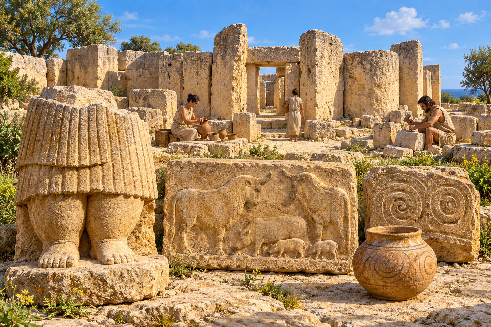
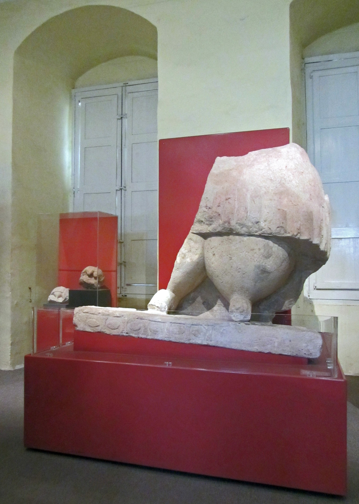

FEATURED PLACE · PREHISTORIC HERITAGE
Tarxien Temples
Discover Malta’s prehistoric heritage
Visit the Tarxien Temples to encounter one of Malta’s remarkable prehistoric monuments. The complex belongs to the UNESCO World Heritage property called the Megalithic Temples of Malta. Its architecture helps explain why these island monuments have international significance. [1]

The real site has a modern protective shelter. The imagined people, architecture and arrangement of discoveries do not show current visitor conditions. Select the image to see the full composition.
THOUSANDS OF YEARS BEFORE THE MODERN VILLAGE
A place to discover
Heritage Malta places the construction of the four megalithic structures broadly between 3600 and 2500 BC. The earliest structure survives close to ground level, while the later buildings preserve a remarkable range of architectural and decorative details. Some official publications use an earlier starting date, around 3800 BC. These are approximate archaeological chronologies, not exact construction years. [2] [3]
Prehistoric remains establish the great antiquity of activity in this area. They should not be used as proof that the present village existed continuously in the same form for five thousand years. The Local Council’s walking guide records Tarxien in a militia list of 1419 as “Mitarxen”. It also presents competing explanations of the village name, including a link with tirxa, a large stone. [4]
Discovery and excavation
The site came to light in 1913. Heritage Malta identifies farmer Lorenzo Despott in its account of the discovery. Sir Themistocles Zammit, then Director of Museums, directed extensive excavations between 1915 and 1919. Those investigations revealed monumental buildings and objects that transformed understanding of Malta’s prehistoric past. [5]
Understanding the buildings
Look for the curved chambers, monumental stone thresholds and entrances, and carved architectural panels. The six-apsed Central Temple has an unusual plan and evidence of corbelled roofing. The highly decorated South Temple contains some of the complex’s best-known prehistoric art. [6]
STONE, SCULPTURE & STORIES
Discoveries and artefacts
The colossal skirted figure
The surviving lower portion of a monumental statue wears a pleated skirt. Its fragmentary condition matters: a complete upper body and face are not preserved in this find. It is an important work of prehistoric sculpture, but its exact identity and meaning are uncertain. A named “Woman of Fertility” should not be treated as an established deity. Heritage Malta stresses how little we know about activities inside these structures. [5]
Bulls and a sow with young
Three animal reliefs were discovered on 25 and 26 August 1915 in a room between the South and Central Structures. They portray two bovines and an animal interpreted by Zammit as a sow with young or visible teats. Heritage Malta connects these images with animal husbandry and the importance of animals to prehistoric society. Fertility symbolism is an interpretation, not proof of a specific religion. [7]
The real reliefs are separate carved surfaces; the artwork above combines their themes into one invented panel.
See the original relief photographs · Heritage Malta ↗Spiral-decorated stones
Spirals occur on carved stone panels within the complex. Their workmanship is observable, but the exact symbolic meaning is not settled. These decorated stones form part of the architecture, rather than a collection of unrelated ornaments. [6] [7]
A large stone bowl and pottery
Heritage Malta’s guidebook announcement highlights a giant stone bowl among the discoveries and describes pottery as a source used by archaeologists to investigate the past. Pottery needs to be interpreted in its archaeological context. The decorated vessel shown in our illustration is an artistic example, not an identified museum object with a verified catalogue number. [8]

THE ORIGINAL ARTEFACT
The surviving colossal figure from Tarxien
This photograph shows the actual fragmentary statue in a museum display, including its surviving lower body and decorated base. Compare its worn surfaces and missing parts with the invented foreground figure in the artistic scene above. The artwork is an interpretation and does not reproduce the artefact exactly.
Continue the story in Valletta
The National Museum of Archaeology is a complementary visit in a separate destination. Its collections include the colossal statue from Tarxien. Vulnerable discoveries removed from the site are housed in the museum for conservation. Check current displays before visiting to see a particular object. [5] [10]
Explore the National Museum of Archaeology ↗MAKE TIME TO EXPLORE
Plan your visit
Discover the ancient side of Ħal Tarxien. Explore monumental stone buildings, intricate carvings and the stories revealed by archaeological discoveries. Plan your visit through Heritage Malta and continue your journey through the village’s cultural heritage.
- Place
- Ħal Tarxien Prehistoric Complex, commonly called Tarxien Temples
- Address
- Triq It-Tempji Neolitiċi, Ħal Tarxien, Malta
- Site telephone
- +356 2169 5578
- Official operator
- Heritage Malta [5]
Access and audio guides
Heritage Malta lists a wheelchair-accessible walkway and audio guides in several languages, including Maltese and English. Contact the operator about your individual access requirements before visiting. [3] [5]
Tickets and opening times
Check the operator’s current prices, booking arrangements, hours, last admission and temporary notices before travelling. This independent community website is not the ticket seller. [9]
Links marked ↗ open an external website in a new tab.
See more of Ħal Tarxien
You could combine your visit with a separate look at the village centre and parish church, subject to their opening and access arrangements. The museum in Valletta is a separate destination.
Discover our church and its history →Sources and further reading
Historical research and visitor links checked: 17 October 2026. Dates for prehistoric construction are approximate. Historical event announcements below are sources, not current event invitations.
- UNESCO World Heritage Centre · Megalithic Temples of Malta ↗
- Heritage Malta · Explore Tarxien Temples for free (chronology; past event) ↗
- Heritage Malta · Access statement, 2023 (PDF; alternative chronology and access details) ↗
- Tarxien Local Council · Four Walks in a Village of Culture (PDF; introduction by Joseph A. Farrugia) ↗
- Heritage Malta · Ħal Tarxien Prehistoric Complex ↗
- Megalithic Temples of Malta · Management Plan 2012–2017, section 1.5.6 (historical PDF) ↗
- Josef Caruana and Warren Bugeja · Circle of Life: The Bulls and Sow Bas-Reliefs ↗
- Heritage Malta · Guidebook launch at Tarxien Temples (past event) ↗
- Heritage Malta · Current opening hours and notices ↗
- Heritage Malta · National Museum of Archaeology, Valletta ↗
The colour illustration was supplied for this community project as AI-generated artwork. It is not archaeological evidence or a photograph of the present site. The documentary statue photograph is credited separately above.